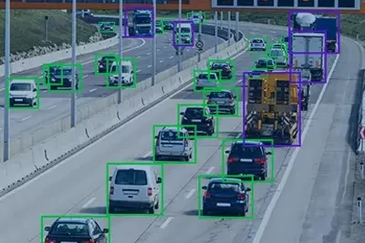

Applied machine learning
Models are selected for the signal, constraints, and risk profile of the actual environment.
AMLX builds machine learning for safety applications with partners in infrastructure, industry, and safety-critical environments, turning complex operational data into practical decisions.
How we work
Models are selected for the signal, constraints, and risk profile of the actual environment.
Software, hardware, sensors, and deployment realities are treated as one system.
Operators and domain experts shape the safety question, system behavior, and what gets improved.

Projects
Turn camera, sensor, and process data into earlier warnings for unsafe conditions.
Give teams a clearer view of what is happening now and what needs attention next.
Design pilots that survive the gap between clean datasets and real environments.
About us
AMLX works close to the operational floor: defining the safety question, testing the signal, and turning promising models into tools that teams can trust.
Partners